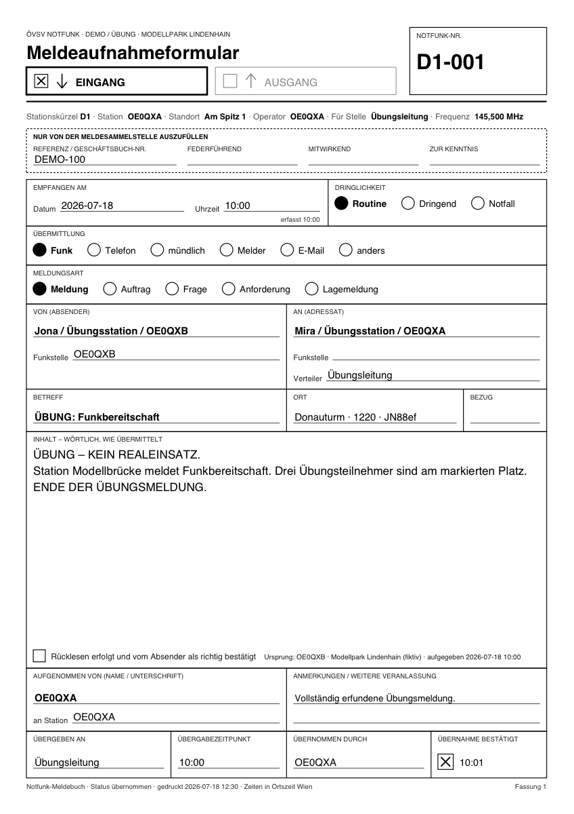

Ausdruck und PDF
← Notfunk-Anleitung · Notfunk-Meldebuch öffnen
Das Meldebuch erzeugt PDF-Dateien: eine einzelne Meldung als Formular, das leere Formular und das ganze Meldebuch. Gedruckt wird im Druckdialog des PDF-Betrachters (Skalierung „Tatsächliche Größe“ bzw. 100 %).
Das leere Formular für Papier
Das Meldebuch läuft auch ohne Internet. Trotzdem sollten Sie auf einen Betrieb nur mit Papier vorbereitet sein, falls Gerät oder Strom ausfallen. Drucken Sie die Formulare deshalb vor dem Einsatz aus: einen Stapel zu Stift und Funkgerät legen. Fällt das Gerät aus, arbeiten Sie auf Papier weiter und tragen die Meldungen später ins Meldebuch nach („Nachtrag vom Papier“); schreiben Sie die Nummer vom Papier in die Anmerkungen, damit beides zusammenpasst.
Das Meldeaufnahmeformular zum Ausdrucken (A4 hoch, eine Seite). Es hat dieselben Felder wie das Formular im Meldebuch; Wahlmöglichkeiten wie Dringlichkeit, Übermittlung und Meldungsart kreuzen Sie an oder kreisen sie ein.
Leeres Formular (PDF) herunterladen
Im Meldebuch finden Sie es auch auf der Startseite unter „Leeres Formular (PDF)“ und unter „Drucken / PDF…“.

Die Farben im Bild zeigen, welche Felder zusammengehören.
Ausfüllen auf Papier: Wortlaut ins große Feld, wenn möglich zurücklesen lassen (nicht zwingend) und abhaken, Übergabe bzw. Übertragung unten eintragen. Den Block „Nur von der Meldesammelstelle auszufüllen“ lassen Sie frei.
Eine Meldung als Formular
„Ausdruck / PDF“ in der Meldung (oder „PDF“ in der Zeile des Meldebuchs) schreibt die Meldung ins Formular und öffnet das PDF in einem neuen Tab; blockiert der Browser den Tab, wird es heruntergeladen.

Auf dem Ausdruck stehen alle Angaben der Meldung und des Einsatzes, die Richtung (die gewählte angekreuzt), Datum und Uhrzeit in Ortszeit Wien und unten die Übergabe bzw. Übertragung. Eine sehr lange Meldung läuft auf Folgeseiten weiter; es wird nichts abgeschnitten.
Das Meldebuch als PDF
„Drucken / PDF…“ im Meldebuch, optional mit Zeitraum (Von/Bis mit Datum und Uhrzeit; nur ein Datum = der ganze Tag), dann „Meldebuch als PDF“. Das PDF (A4 quer) hat die Spalten des Meldebuchs, den ganzen Inhalt jeder Meldung und auf jeder Seite Einsatz, Zeitraum und „Seite n von N“. Notfall und Dringend sind auch schwarzweiß gedruckt erkennbar.
Weiter: Sicherung und Wiederherstellung